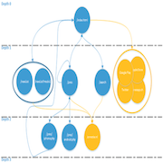
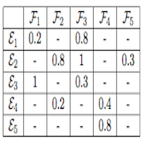
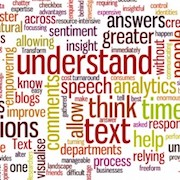

Social recommendation system Github Report
Recommender systems for events based on user data and Facebook profile.
Python, MongoDB, NLTK, Django
The website Gokera (which no longer exists) offered a list of events in the French-speaking part of Switzerland. Its purpose was to recommend events to users, taking into account the ratings of other events. In this project, we are only interested in event ratings and utilize a hybrid recommendation system that combines two approaches: user similarity (collaborative filtering) and decomposition of a product into features (content-based). When we lack user data, it becomes impossible to achieve efficient recommendations. Hence, we conducted experiments by incorporating a social dimension based on Facebook. The inclusion of this social dimension allowed us to obtain user information associated with the features identified during the event analysis process, enabling us to recommend events even in the absence of a rating history. Overall, the system functions but requires adjustments to operate in a production environment, particularly the text analysis.
The Project
Crawling event websites to collect more information
The events available on Facebook often didn't receive a good enough description. One solution to this problem was to visit all the pages of the specified website. We created a specific crawler for this task that analyzes each page and creates indexes that will be used as features later.
Hybrid recommender system
The idea of collaborative filtering is to find other individuals with similar tastes in order to propose similar products that might interest them. One weakness is that the user has to rate a lot of items to find relevant neighbors. Another problem occurs when a new item is available: as long as nobody has rated it, it will never be recommended. Content-based filtering focuses on the features of items, allowing for the definition of product similarity. One problem with this method is over-specialization. To combine both advantages, we propose a hybrid recommender system where we consider the user's product ratings, related features, and similar tastes of other users.
Natural language processing
Analyzing the event description on Facebook, as well as the entire dedicated websites, is challenging. This project utilized various techniques such as lexicon analysis, language detection, website analysis, n-gram analysis, tokenization, lemmatization, and feature extraction using the vector space model (tf-idf), among others.
Miscellaneous
| Type | Semester project |
| Degree | B.Sc. HE-Arc, 3rd year |
| Course | - |
| Duration | ~250 hours |
| Supervisor | Prof. Hatem Ghorbel |